무선설비기사 (2013-06-09 기출문제)
1과목: 디지털 전자회로
1. 정류회로에서 직류전압이 200[V]이고 리플(ripple) 전압 실효값이 4[V]였다면 리플률은 얼마인가?
- 1[%]
- 2[%]
- 10[%]
- 20[%]
(정답률: 86%)

2. 다음 그림과 같은 평활회로에서 출력 맥동률을 최소화하기 위한 방법으로 옳은 것은?
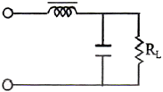
- L과 C 값을 적절하게 감소시킨다.
- L값은 증가, C값은 감소시킨다.
- L값은 감소, C값은 증가시킨다.
- L과 C 값을 적절하게 증가시킨다.
(정답률: 78%)
3. 교류입력의 반주기에 대해 브리지 정류기의 다이오드 동작 조건에 대한 설명으로 적절한 것은?
- 한 개의 다이오드가 순방향 바이어스이다.
- 두 개의 다이오드가 순방향 바이어스이다.
- 모든 다이오드가 순방향 바이어스이다.
- 모든 다이오드가 역방향 바이어스이다.
(정답률: 89%)
4. 전압 이득이 60[dB]인 저주파 증폭기에 궤환율 0.08인 부궤환을 걸면 비직선 왜곡의 개선율은 얼마가 되는가?
- 0.11[%]
- 0.99[%]
- 1.23[%]
- 8.77[%]
(정답률: 69%)
5. 다음 그림은 JFET 소자의 직류전달특성을 나타내었다. 소자의 포화전류 IDS와 컷오프 전압 VGS(off)은 얼마인가?
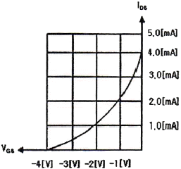
- IDS = 4.0[mA], VGS(off) = -3.0[V]
- IDS = 5.0[mA], VGS(off) = -3.0[V]
- IDS = 4.0[mA], VGS(off) = -4.0[V]
- IDS = 1.0[mA], VGS(off) = -4.0[V]
(정답률: 87%)
6. 트랜지스터의 컬렉터 누설전류가 주위온도의 변화로 15[μA]에서 150[μA]로 증가되었을 때 컬렉터 전류는 9[mA]에서 9.5[mA]로 변화하였다. 이 트랜지스터의 안정계수[S]는 약 얼마인가?
- 9.3
- 8.4
- 4.5
- 3.7
(정답률: 61%)
7. 다음 중 이상적인 연산증폭기의 특성이 아닌 것은?
- 전압증폭도가 무한대
- 입력 임피던스가 무한대
- 출력 임피던스가 무한대
- 주파수 대역폭이 무한대
(정답률: 81%)
8. 궤환 증폭기에서 달이득이 A, 궤환율이 β일 때, |1-βA]=0이었다. 이 때 |βA|=1이면 증폭기의 증폭도는 어떤 동작을 하는가?
- 정류
- 부궤환
- 발진
- 증폭
(정답률: 82%)
9. 수정편에 기계적인 압력을 가하면 표면에 전하가 나타나 전압이 발생하는 현상을 무엇이라 하는가?
- 압전기 현상
- 부성저항 현상
- 자기 왜형 현상
- 인입 현상
(정답률: 87%)
10. 다음 중 주파수 변조에 대한 설명으로 옳지 않은 것은?
- 협대역 FM과 광대역 FM 방식이 있다.
- 변조신호에 따라 반송파의 주파수를 변화시킨다.
- 선형 변조방식이다.
- 반송파로는 cos이나 sin 함수와 같은 연속함수를 사용한다.
(정답률: 89%)
11. 변조신호 주파수 400[Hz], 전압 3[V]로 주파수를 변조하였을 때 변조지수가 50이었다. 이 때 최대주파수편이 Δf는 얼마인가?
- 20[kHz]
- 40[kHz]
- 80[kHz]
- 100[kHz]
(정답률: 64%)
12. Duty cycle이 0.1이고 주기가 40[μs]인 펄스의 폭은?
- 1[μs]
- 2[μs]
- 3[μs]
- 4[μs]
(정답률: 86%)
13. 다음 그림과 같은 회로에서 콘덴서 양단의 스텝 응답에 대한 상승 시간(rise time)은? (단, RC 시정수는 2[μs])
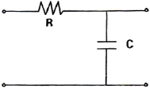
- 2[μs]
- 2.2[μs]
- 4[μs]
- 4.4[μs]
(정답률: 80%)
14. 그레이 코드(Gray Code) 1110을 2진수로 변환하면?
- 1110
- 1100
- 1011
- 0011
(정답률: 88%)
15. 다음 그림의 회로는 어떤 동작을 하는가?
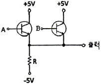
- OR
- NOR
- AND
- NAND
(정답률: 90%)
16. 다음 그림의 논리 회로에 대한 논리식은?
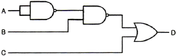
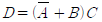
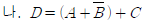
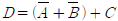
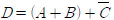
(정답률: 86%)
17. 다음 그림과 같은 회로의 명칭은?
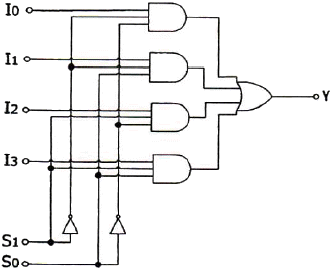
- 병렬 가산기
- 멀티플렉서
- 디멀티플렉서
- 디코더
(정답률: 90%)
18. 다음 그림과 같이 2n개(0~7)의 십진수 입력을 넣었을 때 출력이 2진수(000~1110로 나오는 회로의 명칭은?
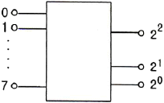
- 디코더 회로
- A-D 변환회로
- D-A 변환회로
- 인코더 회로
(정답률: 77%)
19. 다음 그림과 같은 회로의 명칭은?
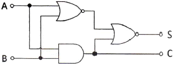
- 동시 회로
- 반동시 회로
- Full Adder
- Half Adder
(정답률: 80%)
20. 다음 계수기(counter)의 명칭으로 알맞은 것은? (문제 오류로 실제 시험에서는 3, 4번이 정답처리 되었습니다. 여기서는 3번을 누르면 정답 처리 됩니다.)
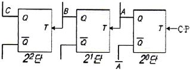
- 상향 4진 계수기
- 하향 4진 계수기
- 상향 8진 계수기
- 하향 8진 계수기
(정답률: 87%)
2과목: 무선통신 기기
21. 진폭변조파의 변조도(m)에 대한 설명 중 틀린 것은?
- 변조도 m=1이면 피변조파(신호파) 전력은 반송파 전력의 1.5배가 된다.
- 변조도 m이 낮을수록 측파대 전력은 감소한다.
- 변조도 m<1이면 타 통신에 혼신을 준다.
- 변조도 m>1이면 신호파의 진폭이 찌그러진다.
(정답률: 83%)
22. 다음 중 QAM의 특징에 대한 설명으로 적합하지 않은 것은?
- QAM 신호는 2개의 직교성 DSB-SC 신호를 선형적으로 합성한 것으로 볼 수 있다.
- M진 QAM의 대역폭 효율은 M진 PSK의 대역폭 효율과 동일하다.
- QAM은 비동기 검파 또는 비동기 직교 검파방식을 사용하여 신호를 검출한다.
- QAM은 APK 변조방식으로 잡음과 위상변화에 우수한 특성을 가진다.
(정답률: 76%)
23. 다음 중 3세대 이후(3.5세대)의 무선통신시스템에 사용하는 다중화방식은?
- CDMA
- OFDM
- TDMA
- FDMA
(정답률: 83%)
24. 다음은 64QAM의 블록도를 나타낸다. 괄호에 들어가는 내용으로 적절한 것은?
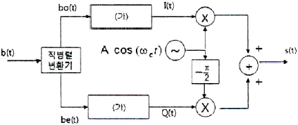
- 2-to-4 레벨변환기
- 3-to-8 레벨변환기
- 4-to-16 레벨변환기
- 5-to-32 레벨변환기
(정답률: 83%)
25. FSK 신호는 정보데이터에 의하여 반송파의 무엇을 변경하여 얻는 신호인가?
- 주파수
- 위상
- 진폭
- 위상과 진폭
(정답률: 93%)
26. 구형파에서 펄스폭을 τ, 펄스주기를 T, 주파수를 f, 펄스의 첨두치를 P, 평균치를 A라고 하면 충격 계수(duty factor) D의 관계가 틀린 것은?
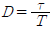
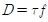
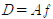
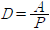
(정답률: 81%)
27. 이상형 CR 발진기 중 병렬 용량형 발진기의 발진주파수를 나타내는 식은?
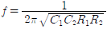
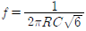
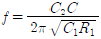
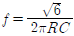
(정답률: 72%)
28. QPSK 신호의 전송속도가 4000[bps]이면 보(baud)속도는 얼마인가?
- 1,000[baud]
- 2,000[baud]
- 8,000[baud]
- 1,600[baud]
(정답률: 86%)
29. 수신 주파수가 850[kHz]이고 국부발진주파수가 1,3⑤[kHz]일 때 영상주파수는 몇 [kHz]인가?
- 790[kHz]
- 1,020[kHz]
- 1,760[kHz]
- 2,155[kHz]
(정답률: 89%)
30. 다음의 그림에 나타낸 파형은 어떤 변조방식에 대한 신호파형인가?
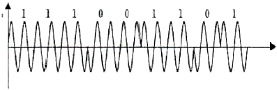
- PSK
- ASK
- FSK
- QAM
(정답률: 88%)
31. 단상 전파 브리지 정류회로에서 각 다이오드에 걸리는 최대 역전압의 크기는? (단, 1차측 입력전압 100[V], 트랜스포머의 권선비는 n1:n2=10:1)
- 10[V]
- 14.1[V]
- 100[V]
- 141[V]
(정답률: 87%)
32. 정전압 회로(Regulator circuit)에서 경부하시 효율이 병렬 제어형보다 크고, 출력 전압의 안정 범위가 넓은 것은?
- 제너 다이오드형 정전압 회로
- 병렬 제어형 정전압 회로
- 직렬 제어형 정전압 회로
- IC형 정전압 회로
(정답률: 62%)
33. 정류회로에서 정류효율은 나타낸 식은?
- η = 출력직류전력 / 입력직류전력
- η = 출력직류전력 / 입력교류전력
- η = 출력교류전력 / 입력직류전력
- η = 출력교류전력 / 입력교류전력
(정답률: 77%)
34. 다음 중 UPS의 구성에 대한 설명으로 적합하지 않은 것은?
- 입력 필터부 : 고조파 성분을 없애는 장치
- 정류부 : 교류전원을 직류전원으로 변환하는 장치
- Static 스위치부 : 장비에 문제가 발생되었을 때 출력측으로 전원이 공급되지 않을시 출력측으로 전원을 공급할 수 있는 비상 전원 공급용 스위치부
- 축전지 : 전원을 충전하는 장치
(정답률: 89%)
35. 페이징 기능은 이동통신 단말기에 착신호가 발생하였을 때 단말기가 있는 위치구역의 기지국 제어장치를 통하여 단말기를 호출하는 것이다. 페이징 구역은 단말기가 가장 최근에 등록을 한 위치구역이며 이 정보는 어디에 저장되어 있는가?
- MSC
- VLR
- EIR
- BSC
(정답률: 79%)
36. 안테나의 실효고를 바르게 설명한 것은?
- 전류분포가 일정한 안테나 높이
- 복사전력이 가장 작은 안테나 높이
- 공전잡음이 가장 작은 안테나 높이
- 전압분포가 0이 되는 안테나 높이
(정답률: 75%)
37. 어떤 선로의 출력이 개방시키고 입력 임피던스를 측정하였더니 Z1이고, 출력을 단락시키고 입력 임피던스를 측정하였더니 Z2일 때, 이 선로의 특성 임피던스는?
- Z1Z2
- Z2/Z1
- Z1/Z2
- (Z1Z2)1/2
(정답률: 87%)
38. 전계강도 측정기를 이용하여 큰 전계강도를 측정할 때 오차가 발생하는 가장 큰 이유는?
- 전계강도 측정기의 직선성이 나쁠 때
- 전계강도 측정기의 감도가 나쁠 때
- 전계강도 측정기의 이득이 나쁠 때
- 전계강도 측정기의 주파수 특성이 나쁠 때
(정답률: 62%)
39. 공중선의 실효 인덕턴스가 2[μH], 실효 정전용량이 2[pF]일 때 이 공중선의 고유 주파수는 약 몇 [MHz]인가?
- 60[MHz]
- 80[MHz]
- 100[MHz]
- 120[MHz]
(정답률: 64%)
40. 마이크로파 통신에 있어 수신전력 Pr을 바르게 나타낸 것은? (단, d는 송수신점간 거리, Pℓ는 송신전력, Gℓ는 송신 안테나 이득, Gr은 수신 안테나 이득이다.)
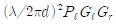
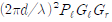
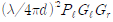
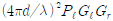
(정답률: 72%)
3과목: 안테나 공학
41. 다음 중 전파의 성질에 대한 설명으로 적합하지 않은 것은?
- 송신측에서 수직 다이폴을 사용하면 수신측에서도 수직편파 안테나를 사용하여야 한다.
- Snell의 법칙은 매질의 경계면에서 일어나는 회절현상을 분석할 때 사용한다.
- 도체에 전파가 진입할 때의 감쇠되는 정도는 표피작용의 깊이(skin depth)로 알 수 있다.
- 주파수가 높을수록 직진성이 강하고 낮을수록 회절이 잘 된다.
(정답률: 76%)
42. 자유공간의 파동 임피던스를 나타내는 것 중에서 틀린 것은? (단, ε0은 유전율, μ0는 투자율, E는 전계, H는 자계로서 모두 자유공간에서의 값이다.)
- 120π[Ω]
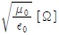
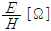
- μoH2[Ω]
(정답률: 75%)
43. 다음 중 극초단파(UHF) 주파수 범위를 바르게 나타낸 것은?
- 30~300[MHz]
- 300~3,000[MHz]
- 3~30[GHz]
- 30~300[GHz]
(정답률: 85%)
44. 무손실 선로의 특성임피던스(Z0) 식을 옳게 표시한 것은?
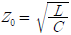
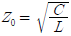
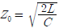
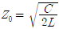
(정답률: 89%)
45. 다음 중 급전선에 관한 설명으로 잘못된 것은?
- 동축케이블은 불평형형이다.
- 평행 2선식은 Folded 다이폴과 직접 연결하여 많이 사용한다.
- 동축케이블이 굵으면 손실도 적다.
- 평행 2선식 급전선의 특성 임피던스는
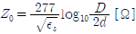
[Ω]이다. (단, εs: 비유전율, D: 선의 간격, d: 선의 지름)
(정답률: 81%)
46. 다음 중 급전선에 요구되는 사항으로 틀린 것은?
- 전송효율이 높을 것
- 특성임피던스가 높을 것
- 절연내력이 클 것
- 유도방해를 받거나 주지 말 것
(정답률: 84%)
47. 도파관의 임피던스 정합 방법에 해당하지 않는 것은?
- Stub에 의한 정합
- 무반사 종단회로에 의한 정합
- 도체 봉(post)에 의한 정합
- 방향성 결합기에 의한 정합
(정답률: 66%)
48. 무손실 급전선로 상에서 입사파 전압의 실효치가 150[V]이고, 전압정재파비가 2일 때, 반사파 전압의 실효치는 얼마인가?
- 50[V]
- 60[V]
- 70[V]
- 80[V]
(정답률: 68%)
49. 다음 중 진행파형 안테나로서 전리층 반사를 이용하여 원거리 통신에 적합한 단파용 안테나는?
- 루프(Loop) 안테나
- 더블렛(Doublet) 안테나
- 디스콘(Discone) 안테나
- 롬빅(Rhombic) 안테나
(정답률: 78%)
50. 다음 중 수평편파 dipole 안테나와 수직편파 dipole 안테나의 비교 항목 중 잘못된 것은? (항목, 수평편파 dipole, 수픽편파 dipole)
- 공중선의 높이, 낮게 할 수 있다, 비교적 높게 친다.
- 수평면내지향특성, 8자형, 무지향성
- 잡음방해, 작다. 크다
- 정합방법, 불편, 편리
(정답률: 62%)
51. 수평 반파장 다이폴 안테나를 만들어 20[MHz]인 전파를 발사하고자 할 때 안테나의 한쪽(급전점을 중심으로 좌측 또는 우측) 길이는 약 몇 [m]로 하면 좋겠는가? (단, 단축률은 5[%]로 한다.)
- 3.6[m]
- 3.8[m]
- 7.1[m]
- 7.5[m]
(정답률: 45%)
52. 안테나 손실저항 중 코로나손실에 대한 설명으로 맞는 것은?
- 코로나 방전등에 의해 생기는 손실
- 안테나 지시물이나 안테나 주변의 유도체에 의한 고주파손실
- 대지와 안테나와의 접촉저항
- 안테나 주변의 도체내에 유기되는 고주파와 전류에 의한 손실
(정답률: 91%)
53. 정전계와 방사계의 크기가 같아지는 지점은? (단, λ는 파장이다.)
- λ
- 3.14λ
- λ/2
- 0.16λ
(정답률: 84%)
54. 다음 중 Beam 안테나의 특징이 아닌 것은?
- 지향성이 예민하다.
- 단파 및 초단파대에서 저이득이다.
- 송신출력이 적어도 되고 전력이 경제적이다.
- 반파장 안테나 소자를 규칙적으로 배열한다.
(정답률: 69%)
55. 자동이득 조절장치(AGC)를 이용하여 방지할 수 있는 페이딩으로 가장 적절한 것은?
- 도약성 페이딩
- 선택성 페이딩
- 간섭성 페이딩
- 흡수성 페이딩
(정답률: 76%)
56. 자기람 현상에 대한 설명으로 틀린 것은?
- 고위도 지방이 심하게 나타난다.
- 야간보다 주간에 많이 나타난다.
- 지자계의 급격한 변동을 발생시킨다.
- 태양 표면의 폭발에 의해 방출된 다량의 대전입자가 지구에 도달하기 때문에 야기된다.
(정답률: 83%)
57. MUF가 5[MHz]일 때 전리층 반사파를 사용하여 통신을 수행하기에 가장 적합한 주파수는?
- 2.125[MHz]
- 4.25[MHz]
- 8.5[MHz]
- 17[MHz]
(정답률: 84%)
58. 등가지구 반경계수가 K일 때, 송수신 안테나간의 기하학적 가시거리(d1)와 전파 가시거리(d2)의 관계를 바르게 나타낸 것은?
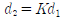
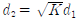
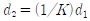
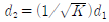
(정답률: 85%)
59. 무선통신 시스템에서 공전으로 인한 잡음을 경감시키기 위한 대책으로 적합하지 못한 것은?
- 지향성이 예민한 안테나를 사용한다.
- 다이버시티 수신기법을 이용한다.
- 수신기의 선택도를 높이도록 한다.
- 진폭제한회로가 부가된 수신기를 설치한다.
(정답률: 62%)
60. 초단파대 통신에서 전파 가시거리에 영향을 미치지 않는 요소는?
- 등가지구 반경계수
- 송신 안테나 높이
- 수신 안테나 높이
- 사용 주파수
(정답률: 65%)
4과목: 무선통신 시스템
61. 비트율(bit rate)이 일정한 경우 16진 PSK의 전송 대역폭은 2진 PSK(BPSK) 전송 대역폭의 몇 배인가?
- 1/4배
- 1/2배
- 2배
- 4배
(정답률: 75%)
62. 다음 중 백색잡음(White Noise)에 대한 설명으로 적합하지 않은 것은?
- 열 잡음이 대표적인 예이다.
- 레일리(Rayleigh) 분포특성을 보인다.
- 백색잡음은 신호에 더해지는 형태이다.
- 주파수 전 대역에 걸쳐 전력스펙트럼 밀도가 거의 일정하다.
(정답률: 90%)
63. FM 통신방식이 AM 방식에 비해 S/N비가 좋은 이유는?
- 리미터(limiter)를 사용한다.
- 점유주파수대폭이 좁다.
- 깊은 변조를 할 수 있다.
- 클래리파이어(clarifier)를 사용한다.
(정답률: 89%)
64. PCM 32채널 방식 설명 중 옳은 것은?
- 각 채널은 4개의 비트로 구성된다.
- 프레임당 비트 수는 256개이다.
- 전송속도는 1.024[Mbit/s]이다.
- 멀티 프레임 수(주기)는 8(4.0ms)이다.
(정답률: 62%)
65. 스펙트럼 확산통신 시스템 중 직접확산 DS(Direct Sequence) 방식의 특징이 아닌 것은?
- 간섭(재밍)에 강하다.
- 신호 검출이 용이하다.
- 다중경로에 강하다.
- PN부호 발생기가 필요하다.
(정답률: 60%)
66. FDMA로 구성된 이동통신 시스템에서 총 33[MHz]의 대역이 할당되고, 하나의 쌍방향 이동전화 서비스를 위하여 25[kHz]의 단신 채널 2개를 할당하고 있는 경우, 셀당 동시에 제공할 있는 최대 호(call) 수를 계산하면?
- 330
- 660
- 990
- 1,320
(정답률: 76%)
67. 무선통신시스템에서 기지국과 이동국과의 다중 경로로 인하여 신호가 통달되는 거리의 차가 최대 2[km]이고 전송속도가 512[kbps]일 때 최소 보호 비트는 얼마인가?
- 2비트
- 4비트
- 6비트
- 8비트
(정답률: 64%)
68. 와이브로(WiBro)의 시스템 구성을 단말, 기지국, ACR, 서버로 구분할 수 있다. 이중에서 IP 라우팅과 이동성을 관리하는 시스템은 무엇인가?
- 단말
- 기지국
- ACR
- 서버
(정답률: 61%)
69. 2세대 CDMA 이동통신 시스템 및 W-CDMA 시스템에서 주파수 환산된 채널의 대역폭은 각각 얼마인가?
- 2.5[MHz], 3[MHz]
- 2.5[MHz], 2.5[MHz]
- 1.25[MHz], 5[MHz]
- 1.25[MHz], 4[MHz]
(정답률: 67%)
70. 이동통신에서 사용하는 중계기중에서 주파수 발진 가능성이 있는 중계기는 무엇인가?
- 광 중계기
- RF 중계기
- LASER 중계기
- 주파수변환 중계기
(정답률: 72%)
71. 노트북 컴퓨터와 PDA, 디지털카메라, 휴대폰 등의 대중화에 따라 주로 짧은 거리에서 적외선을 이용하는 무선데이터통신시스템으로 홈네트워킹 무선기술에서 중요한 역할을 하는 것은?
- Bluetooth
- Home-RF
- IrDA
- VoIP
(정답률: 60%)
72. 인터넷이 전 세계의 컴퓨터들로 접속된 망이 될 수 있게 된 이유로 가장 적당한 것은?
- Windows 운영체제가 전 세계에 걸쳐 사용되고 있어서 컴퓨터를 사용하는 인구가 증대되었기 때문
- 국제간 협력에 의해 전 세계를 연결해주는 네트워크를 일괄로 구축하였기 때문
- 전화망의 수요가 포화되어 새로운 시장 개척을 위해 통신사업자들이 인터넷 구축에 적극적으로 참여했기 때문
- 인터넷이 Host-to-Host 프로토콜인 TCP/IP를 이용하고 있어서 호스트간에 접속된 네트워크의 종류에 무관하게 호스트간 통신이 가능하기 때문
(정답률: 86%)
73. 다음 중 Mobile IP의 Discovery 능력을 지원해주는 프로토콜은?
- ICMP
- BGP
- OSPF
- UDP
(정답률: 65%)
74. 다음 중 Mobile IP가 가지는 기본적인 능력이 아닌 것은?
- Discovery
- Forwarding
- Registration
- Tunneling
(정답률: 70%)
75. 다음의 ASCII 제어문자 중에서 수신기로부터 송신기로 긍정적인 응답을 보내기 위한 것은?
- NAK
- ENQ
- ACK
- EOT
(정답률: 92%)
76. 다음 중 TCP/IP 프로토콜의 네트워크 계층과 관련이 없는 것은?
- DNS
- OSPF
- ICMP
- RIP
(정답률: 83%)
77. 다음 중 무선통신 네트워크의 유지보수에서 쓰이는 용어인 SINAD와 거리가 먼 것은?
- Signal to Noise And Distortion의 약어이다.
- 무선통신 기지국의 기본적인 측정항목이다.
- SINAD를 측정하기 위해서 별도의 신호 발생기와 SINAD 계측기가 있어야 한다.
- 음성의 압축률을 측정할 때 이용되는 방법이다.
(정답률: 81%)
78. 다음 중 안테나의 적절한 분리도를 성취할 수 있는 방법인 것은?
- 낮은 전후방비를 갖는 저이득 안테나를 사용한다.
- 중계기의 도너 및 커버리지 안테나 사이의 이격거리를 작게 한다.
- 안테나 사이(도너 안테나와 커버리지 안테나)에 외부 차폐를 시킨다.
- 중계기 수신레벨보다 3[dB]이하로 안테나 분리도를 유지시킨다.
(정답률: 68%)
79. 스펙트럼 분석기(spectrum analyzer)의 용도로서 맞지 않는 것은?
- 변조의 직선성 측정
- 안테나의 pattern 측정
- RF 간섭 시험
- FM 편차 측정
(정답률: 63%)
80. 무선통신시스템의 유지보수 기능에 해당하지 않는 것은?
- 무선통신망 보안관리 기능
- 무선통신망 상태관리 기능
- 무선통신망 고장관리 기능
- 무선통신망 고객관리 기능
(정답률: 89%)
5과목: 전자계산기 일반 및 무선설비기준
81. 16진수의 값 ‘12345678’을 기억장치에 저장하려고 한다. Little Endian 방식으로 저장된 것은 어느 것인가?
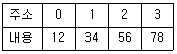
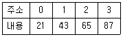
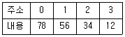
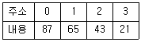
(정답률: 85%)
82. 컴퓨터의 운영체제에서 로더(loader)란 실행 프로그램 혹은 데이터를 주기억 장치내의 일정한 번지에 저장하는 작업을 말하는 것이다. 다음 중 로더의 주요 기능이 아닌 것은?
- 프로그램과 프로그램 간의 연결(linking)을 수행한다.
- 출력 데이터에 대해 일시 저장(spooling) 기능을 수행한다.
- 프로그램이 실행될 수 있도록 번지수를 재배치(relocation)한다.
- 프로그램 또는 데이터가 저장될 번지수를 계산하고 할당(allocation)한다.
(정답률: 86%)
83. 다음 중 중앙처리장치(CPU)의 기능이 아닌 것은?
- 명령어 생성(Instruction Create)
- 명령어 인출(Instruction Fetch)
- 명령어 해독(Instruction Decode)
- 데이터 인출(Data Fetch)
(정답률: 73%)
84. 대기 중인 프로세서가 요청한 자원들이 다른 대기 중인 프로세스에 의해서 점유되어 다시 프로세스 상태를 변경시킬 수 없는 경우가 발생하게 되는데 이러한 상황을 무엇이라 하는가?
- 한계 버퍼 문제
- 교착상태
- 페이지 부재상태
- 스레싱(Thrashing)
(정답률: 86%)
85. 다음 중 10진수 47.625를 2진수로 변환한 것으로 옳은 것은?
- 101111.111
- 101111.010
- 101111.001
- 101111.101
(정답률: 81%)
86. 다음 중 BCD 코드 1001에 대한 해밍 코드를 구하면? (단, 짝수 패리티 체크를 수행한다.)
- 0011001
- 1000011
- 0100101
- 0110010
(정답률: 75%)
87. 다음 중 2진수 (100011)2의 2의 보수는 얼마인가?
- 100011
- 011100
- 011101
- 011110
(정답률: 84%)
88. 다음 중 선형 자료구조가 아닌 것은?
- 배열
- 스택
- 그래프
- 큐
(정답률: 69%)
89. 가상 기억장치 구현방법의 한 가지로, 기억장치를 동일한 크기의 페이지 단위로 나누고 페이지 단위로 주소 변환 및 대체를 하는 방식은?
- 논리 메모리 분할 기법
- 페이징 기법
- 스케줄링 기법
- 세그먼테이션 기법
(정답률: 86%)
90. 8비트로 된 레지스터에서 첫째 비트는 부호비트로 0, 1로 양, 음을 나타낸다고 할 때 2의 보수(2's Complement)로 숫자를 표시한다면 이 레지스터로 표현할 수 있는 10진수의 범위로 올바른 것은?
- -256 ~ +256
- -128 ~ +127
- -128 ~ -128
- -256 ~ +127
(정답률: 89%)
91. 방송국의 허가를 받은 자는 방송국 운용 개시 후, 3월 이내에 방송구역 전계강도 실측자료를 누구에게 제출해야 하는가?(관련 규정 개정전 문제로 여기서는 기존 정답인 2번을 누르면 정답 처리됩니다. 자세한 내용은 해설을 참고하세요.)
- 문화관광부장관
- 미래창조과학부장관
- 국립전파연구원장
- 중앙전파관리소장
(정답률: 74%)
92. 무선설비 등에서 발생하는 전자파가 인체에 미치는 영향을 고려하여 제정한 기준이 아닌 것은?
- 전자파장해검정기준
- 전자파인체보호기준
- 전자파강도측정기준
- 전자파흡수율측정기준
(정답률: 74%)
93. 다음 중 적합인증 대상기자재가 아닌 것은?
- 구내교환기
- 광통신용 회선종단장치
- 과학용 고주파 이용기기
- 생활무선국용 무선설비의 기기
(정답률: 85%)
94. 다음 중 준공검사를 받은 후 운용하여야 하는 무선국은?
- 국가안보 또는 대통령 경호를 위하여 개설하는 무선국
- 공해 또는 극지역에 개설하는 무선국
- 외국에서 운용할 목적으로 개설한 육상이동지구국
- 도로관리를 위하여 개설하는 기지국
(정답률: 81%)
95. 다음 중 무선국 검사에 있어서 성능검사 항목에 포함되지 않는 것은?
- 공중선전력
- 변조도
- 무선종사자의 배치
- 실효복사전력
(정답률: 79%)
96. 다음 중 신고로서 무선국 개설이 가능한 경우가 아닌 것은?
- 적합성평가를 받은 무선설비를 사용하는 아마추어국
- 발사하는 전파가 미약한 무선국 또는 무선설비의 설치공사가 필요없는 무선국
- 수신전용의 무선국
- “대가에 의한 주파수할당” 규정에 의하여 주파수할당을 받은 자가 전기통신역무 등을 제공하기 위하여 개설하는 무선국
(정답률: 59%)
97. 다음 중 고시대상 무선국을 허가한 경우 고시하여야 할 사항이 아닌 것은?
- 시설자의 성명 또는 명칭
- 허가의 유효기간
- 무선국의 명치 및 종별과 무선설비의 설치장소
- 주파수, 전파의 형식, 점유주파수대폭 및 공중선전력
(정답률: 71%)
98. 긴급통신ㆍ안전통신 또는 비상통신에 관한 의무를 이행하지 아니한 자에 대한 처분으로 가장 적합한 것은?
- 200만원 이하의 과태료
- 300만원 이하의 과태료
- 1년 이하의 징역 또는 500만원 이하의 벌금
- 3년 이하의 징역 또는 2000만원 이하의 벌금
(정답률: 50%)
99. 미래창조과학장관이 주파수 회수 또는 주파수 재배치를 시행할 경우, 이의 가장 주된 목적은?
- 전파자원의 공평하고 효율적인 이용을 촉진하기 위하여
- 전파이용 및 전파에 관한 기술의 개발을 촉진하기 위하여
- 전파의 진흥을 도모하고 공공복리의 증진을 도모하기 위하여
- 무선국 개설의 결격사유가 발견되어 무선국의 허가를 취소시키기 위하여
(정답률: 74%)
100. “방송통신기자재 등의 적합성 평가에 관한 고시”에 의한 용어 정의 중에서 “기본모델과 전기적인 회로ㆍ구조ㆍ기능이 유사한 제품군으로 기본모델과 동일한 적합성평가번호를 사용하는 기자재”는 무엇이라 하는가?
- 기본모델
- 변경모델
- 동일모델
- 파생모델
(정답률: 91%)